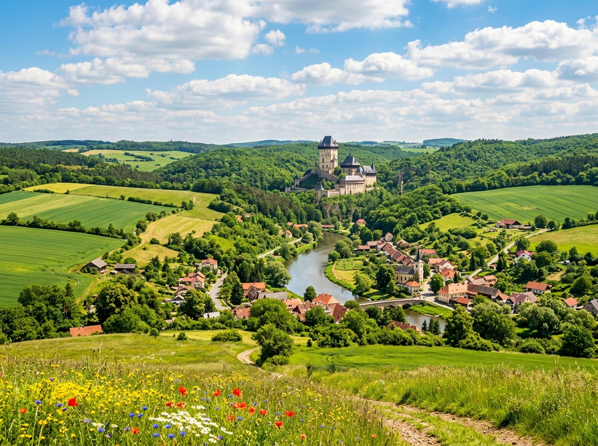
Hier stehen die wichtigsten Daten zu deinem Land. In der App baust du daraus deinen eigenen Steckbrief.
| Hauptstadt | Prag |
| Kontinent | Europa (Mitteleuropa) |
| Sprache | Tschechisch |
| Währung | Tschechische Krone |
| Einwohner | rund 10,5 Millionen Menschen |
| Fläche | etwa 79.000 Quadratkilometer, also ein bisschen größer als Bayern |
| Großer Fluss | die Moldau, sie fließt mitten durch Prag |
| Höchster Berg | die Schneekoppe, etwa 1.603 Meter hoch |
| Nachbarländer | Deutschland (und damit auch Bayern), Polen, die Slowakei und Österreich |
In Tschechien gibt es viele berühmte Orte. Diese vier solltest du kennen.
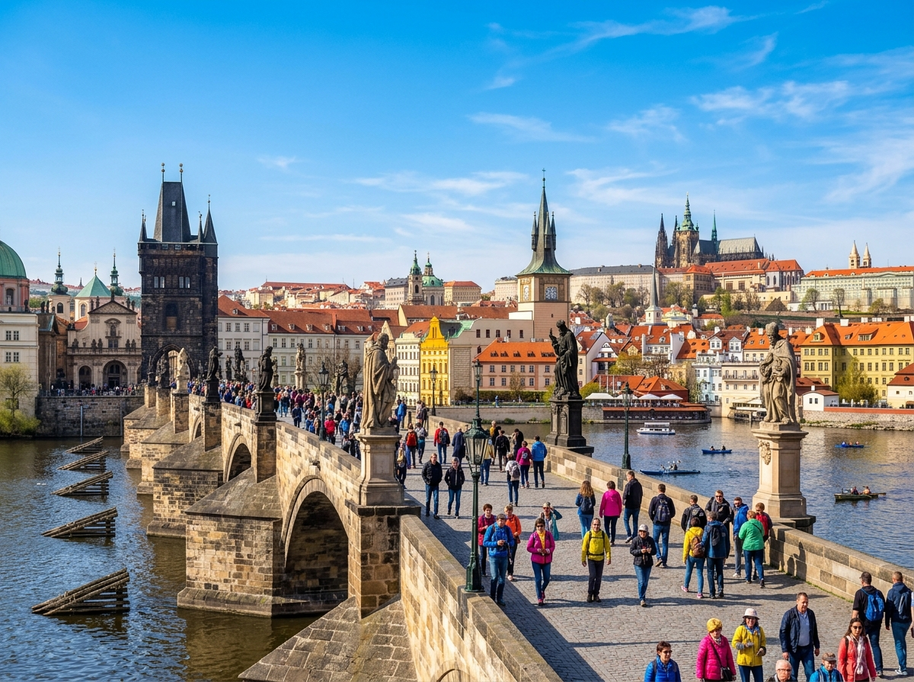
KarlsbrückeDie Karlsbrücke ist eine alte Steinbrücke in Prag. Sie führt über den Fluss Moldau. Auf der Brücke stehen viele Statuen von Heiligen. Die Brücke ist über 600 Jahre alt und ein berühmtes Wahrzeichen.
Grüne Wörter für die AppSteinbrückein Pragüber die MoldauStatuenWahrzeichen
Prager BurgDie Prager Burg liegt hoch über der Stadt. Sie ist die größte Burganlage der Welt. Früher wohnte hier der König. Heute hat der Präsident von Tschechien hier seinen Sitz.
Grüne Wörter für die Appgrößte Burg der Weltüber der Stadtfrüher Königheute Präsidentin Prag
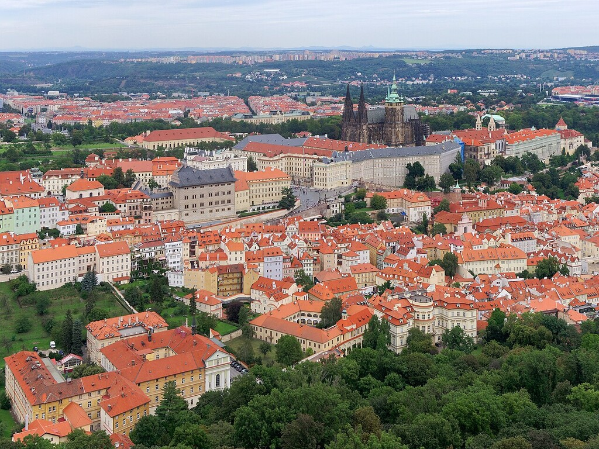
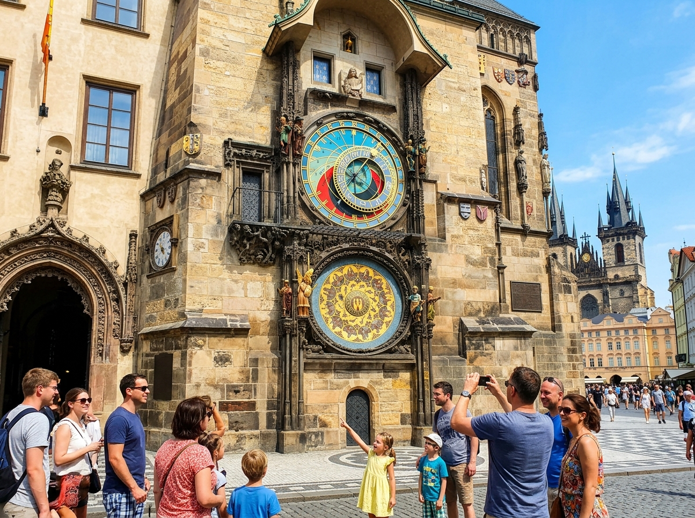
Astronomische UhrIn der Altstadt von Prag hängt eine alte astronomische Uhr am Rathausturm. Jede volle Stunde bewegen sich kleine Figuren an der Uhr. Viele Besucher warten extra auf diesen Moment. Die Uhr zeigt nicht nur die Zeit, sondern auch den Stand von Sonne und Mond.
Grüne Wörter für die Appalte Uhram Rathausturmjede volle StundeFiguren bewegen sichSonne und Mond
BöhmerwaldDer Böhmerwald ist ein großer, ruhiger Wald. Er liegt an der Grenze zu Bayern und Österreich. Dort gibt es Seen, Moore und seltene Tiere. Viele Menschen wandern hier gern.
Grüne Wörter für die Appgroßer WaldGrenze zu BayernSeen und Mooreseltene Tierewandern
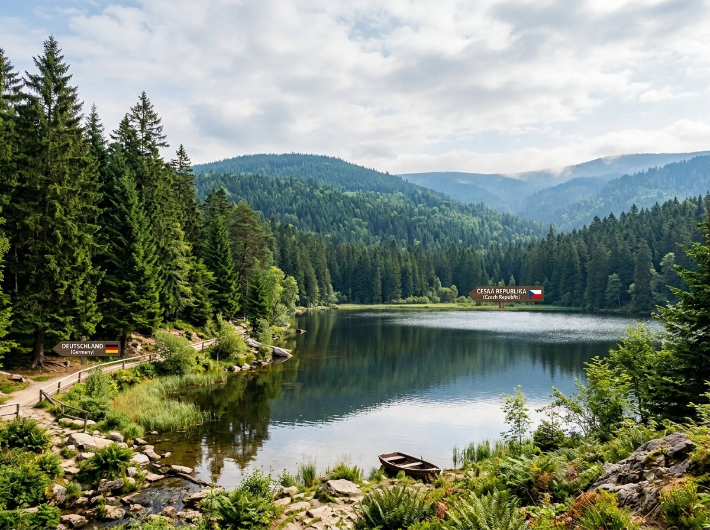
In Tschechien leben besondere Tiere in Wäldern, Teichen und Dörfern.
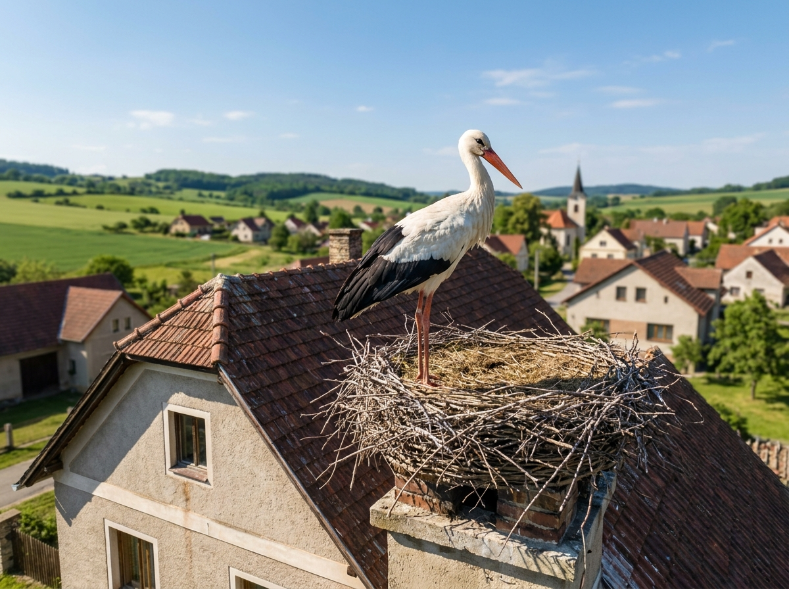
WeißstorchDer Weißstorch ist ein großer Vogel mit langen Beinen und rotem Schnabel. In den Dörfern baut er sein Nest gern auf Schornsteinen und Masten. Viele Tschechen freuen sich über ihn, denn er gilt als Glücksbringer.
Grüne Wörter für die Appgroßer Vogellange Beineroter SchnabelNest auf dem DachGlücksbringer
LuchsDer Luchs ist eine wilde Katze mit Pinseln an den Ohren. Er lebt im Böhmerwald und im Erzgebirge. Der Luchs ist sehr scheu und versteckt sich gut. Darum bekommt man ihn fast nie zu sehen.
Grüne Wörter für die Appwilde KatzePinsel an den Ohrenim Böhmerwaldscheuversteckt sich
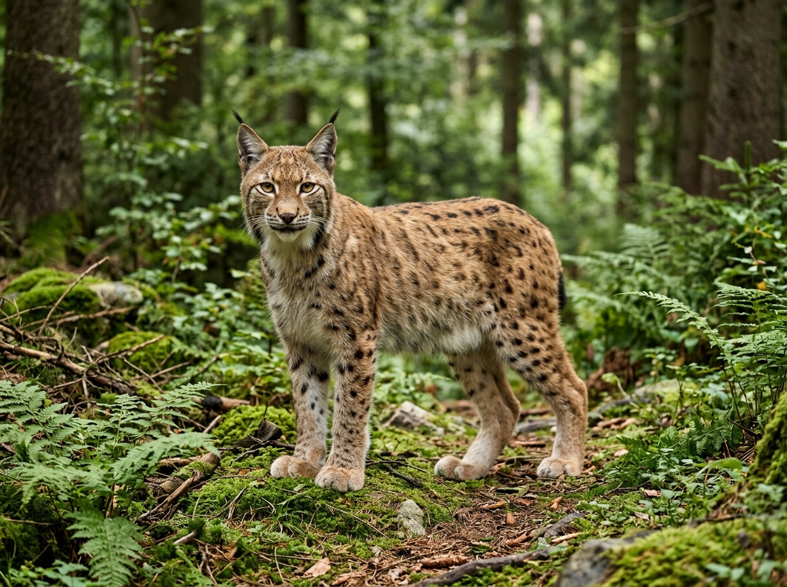
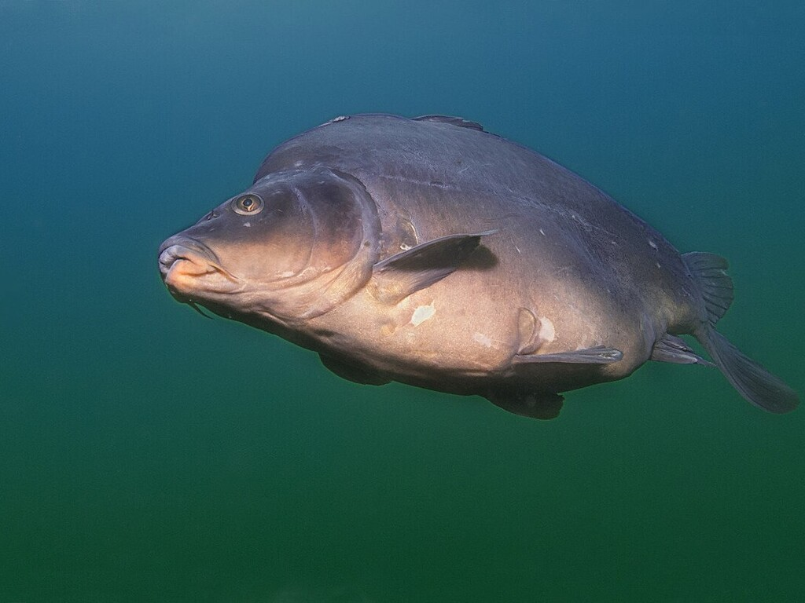
KarpfenDer Karpfen ist ein großer Fisch und lebt in Teichen. In Tschechien ist er besonders zu Weihnachten wichtig. Dann essen viele Familien gebratenen Karpfen. Kurz vor dem Fest werden die Fische auf der Straße verkauft.
Grüne Wörter für die Appgroßer Fischlebt im Teichzu Weihnachtengebratenauf der Straße verkauft
In der App kannst du beim Essen das Foto nehmen oder dein Gericht selbst malen.
SvíčkováSvíčková ist ein Rinderbraten mit einer cremigen Sahnesoße. Dazu gibt es weiche Knödel und ein paar süße Preiselbeeren. Das Gericht kommt in vielen Familien am Sonntag auf den Tisch.
Grüne Wörter für die AppRinderbratenSahnesoßeKnödelPreiselbeerenSonntagsessen
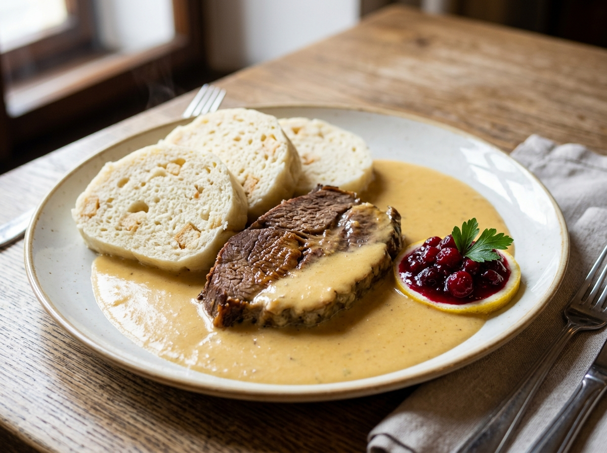
Gulasch mit KnödelnGulasch ist ein Fleischeintopf in dicker roter Soße. Dazu isst man große, weiche Brotknödel. Das Gericht kommt eigentlich aus Ungarn. In Tschechien mögen es aber fast alle.
Grüne Wörter für die AppFleischeintopfrote SoßeBrotknödelaus Ungarnsehr beliebt
TrdelníkTrdelník ist ein süßes Gebäck. Der Teig wird um einen runden Stab gerollt und über dem Feuer gebacken. Danach duftet er nach Zimt und Zucker. Auf den Märkten in Prag kann man ihn überall kaufen.
Grüne Wörter für die Appsüßes Gebäckum einen Stab gerolltüber dem FeuerZimt und Zuckerauf dem Markt
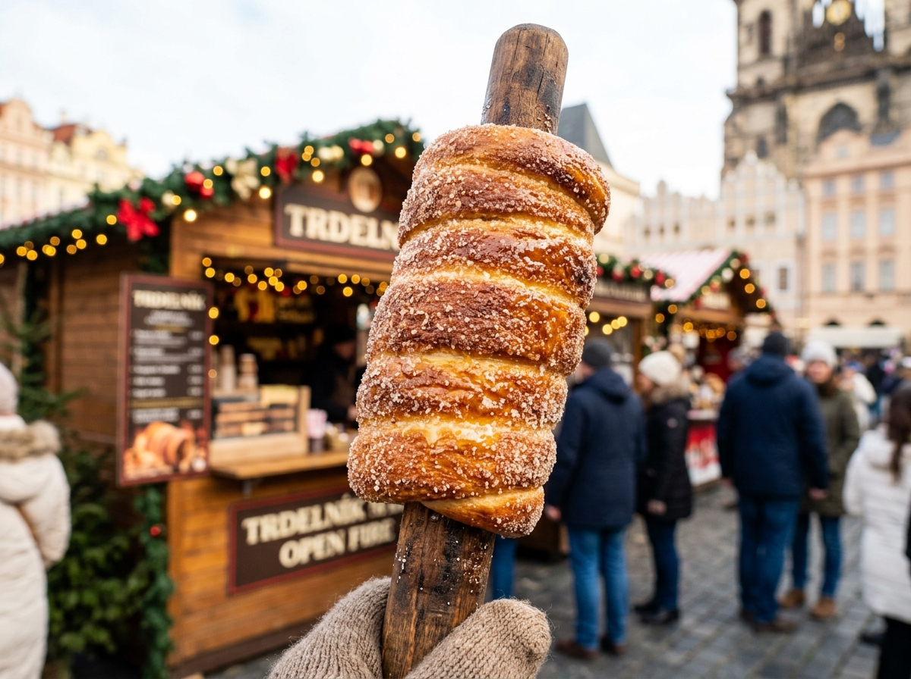
⚽ Gut zu wissen
Die Fußball-Nationalmannschaft von Tschechien heißt die Löwen und spielt im rot-blau-weißen Trikot. Bei der WM 2026 ist Tschechien wieder dabei, das erste Mal seit 20 Jahren. Früher gab es ein größeres Land mit dem Namen Tschechoslowakei. Diese Mannschaft wurde zweimal sogar WM-Zweiter. Heute spielt Tschechien als eigenes Land und gilt als starke, kämpferische Mannschaft.
Grüne Wörter für die Appdie Löwenrot-blau-weißWM 2026 dabeiPatrik SchickBayer Leverkusen
🌟 Profi-Wissen
Patrik Schick ist Tschechiens bekanntester Fußballer. Er spielt beim deutschen Verein Bayer Leverkusen. Bei der Europameisterschaft 2021 schoss er ein spektakuläres Tor von fast der Mittellinie, das viele Menschen als das schönste Tor des Turniers sahen.
Grüne Wörter für die AppPatrik SchickBayer LeverkusenEM-Tor von der MittellinieSpektakular-Tor 2021Tschechien
Schule in TschechienIn Tschechien gehen die Kinder von Montag bis Freitag zur Schule, ganz ähnlich wie bei uns. Sie lernen die tschechische Sprache, die für uns sehr fremd klingt. Viele Kinder lernen außerdem schon früh Englisch oder Deutsch. Nach der Schule gehen sie oft in Vereine, zum Beispiel zum Sport oder zur Musik.
Grüne Wörter für die AppMontag bis Freitagtschechische SpracheEnglisch und DeutschVereineSport und Musik
Wochenende auf dem LandViele Familien haben ein kleines Häuschen auf dem Land, das nennt man Chata. Am Wochenende fahren sie dorthin und verbringen Zeit in der Natur. Dort wird im Garten gearbeitet, gewandert und Pilze gesammelt. Im Winter rodeln und Ski fahren die Kinder gern in den Bergen.
Grüne Wörter für die AppHäuschen auf dem LandChatain der NaturPilze sammelnrodeln und Ski fahren
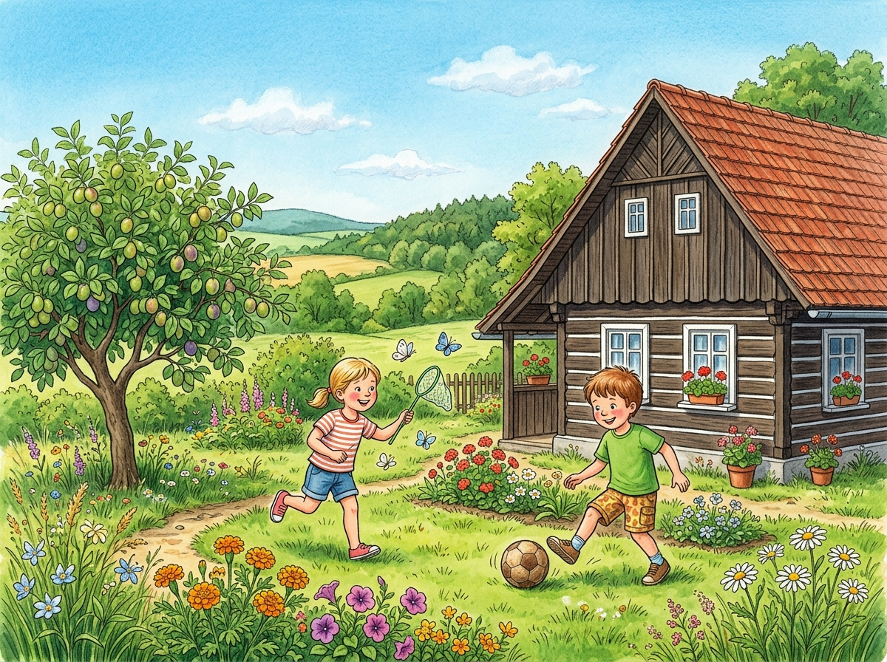